Online ADMM Experiment Visualizations
Generated from results/summary.csv and per-iteration history CSV files. Lower iteration counts and residuals are better; rho trajectory charts show how each controller moves the penalty during ADMM.
Iterations By Problem
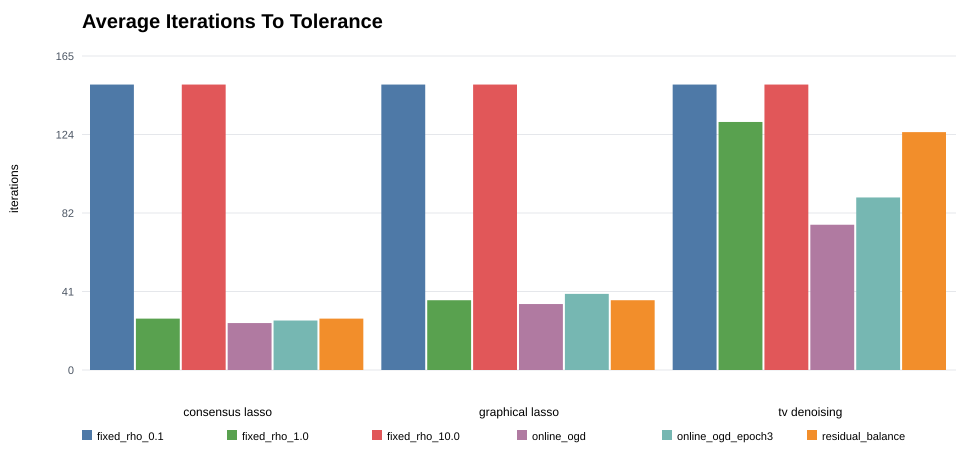
Final Primal By Problem
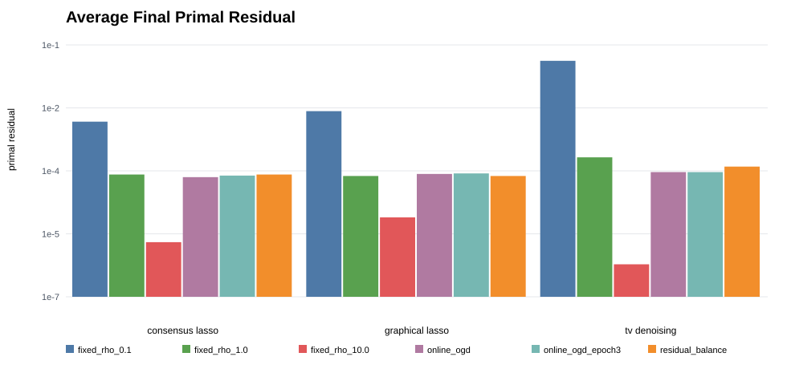
Final Dual By Problem
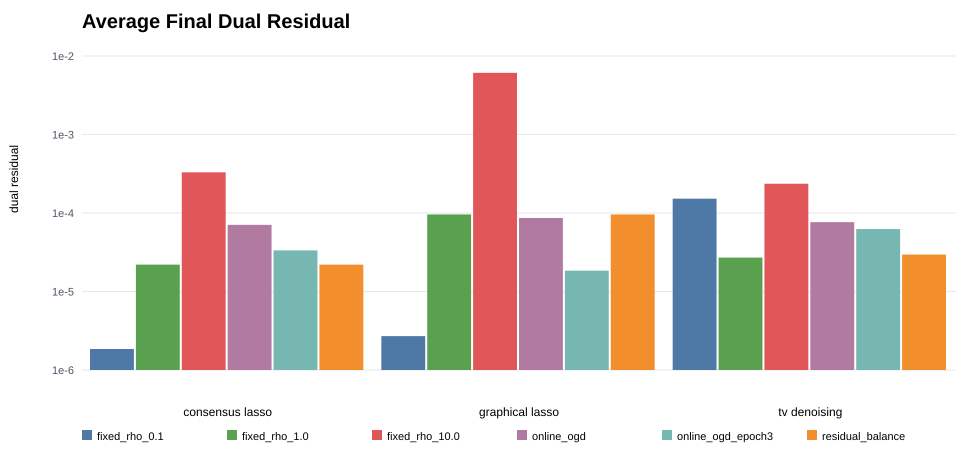
Rho Changes By Problem
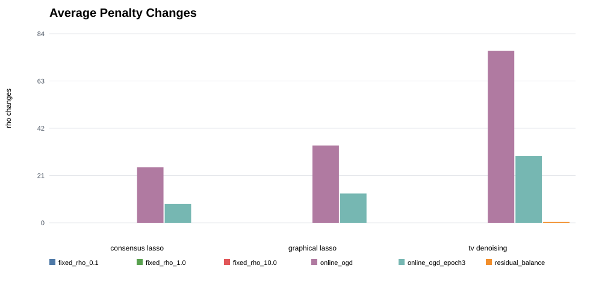
Consensus Lasso Objective Seed0
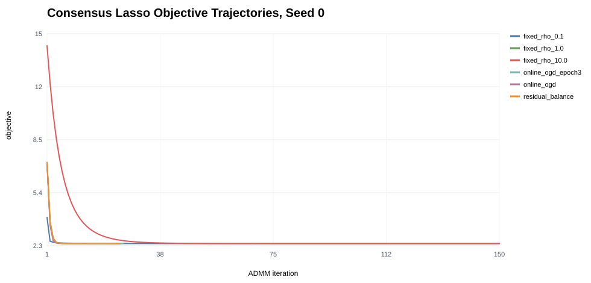
Consensus Lasso Primal Norm Seed0
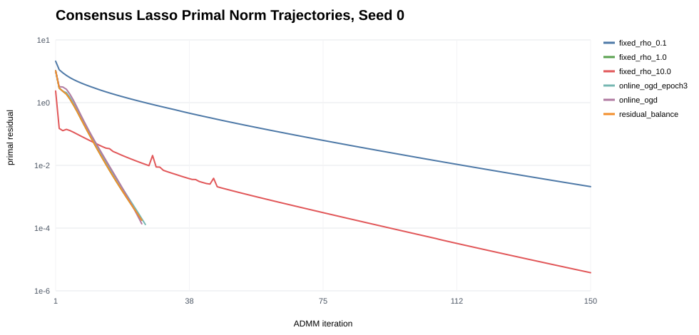
Consensus Lasso Dual Norm Seed0
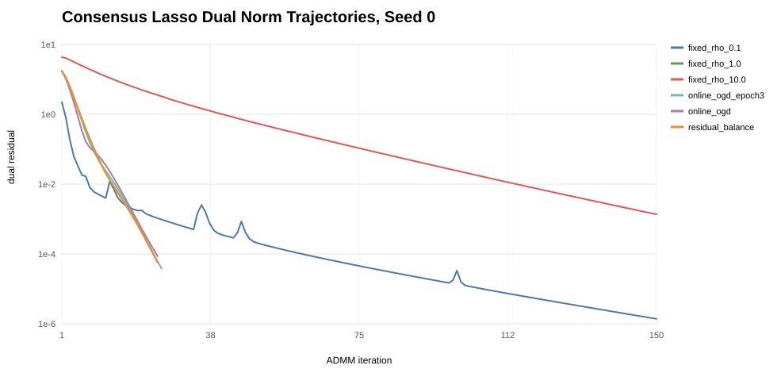
Consensus Lasso Rho Seed0
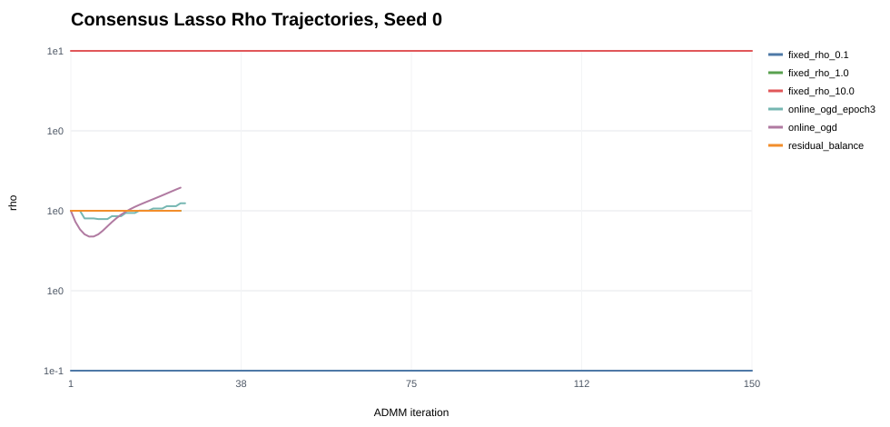
Graphical Lasso Objective Seed0
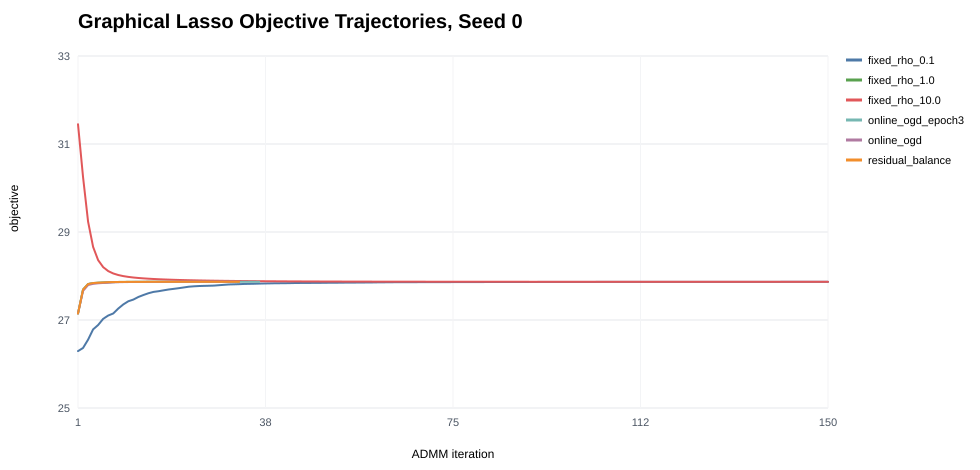
Graphical Lasso Primal Norm Seed0
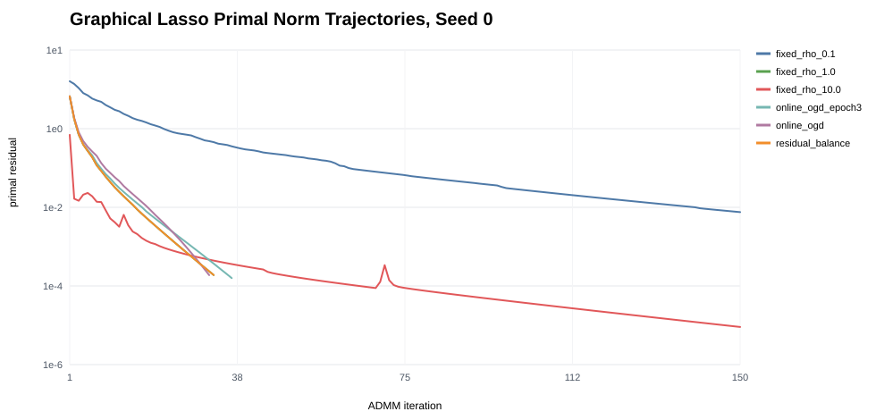
Graphical Lasso Dual Norm Seed0
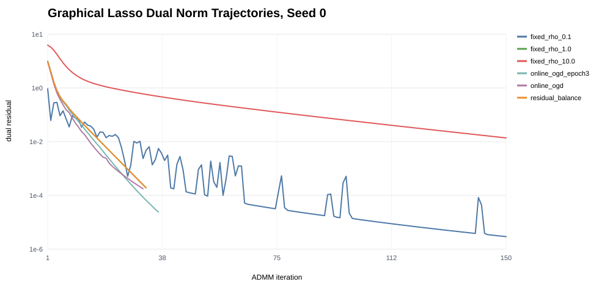
Graphical Lasso Rho Seed0
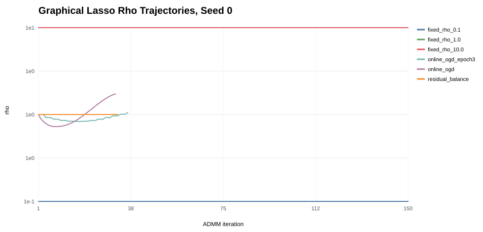
Tv Denoising Objective Seed0
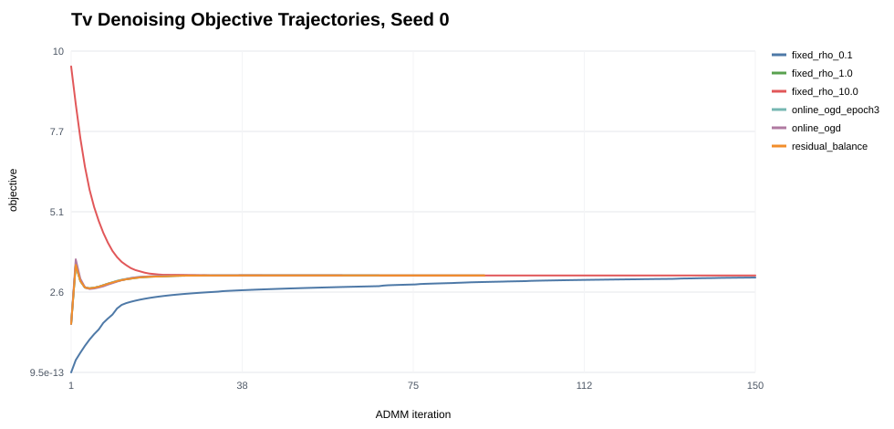
Tv Denoising Primal Norm Seed0
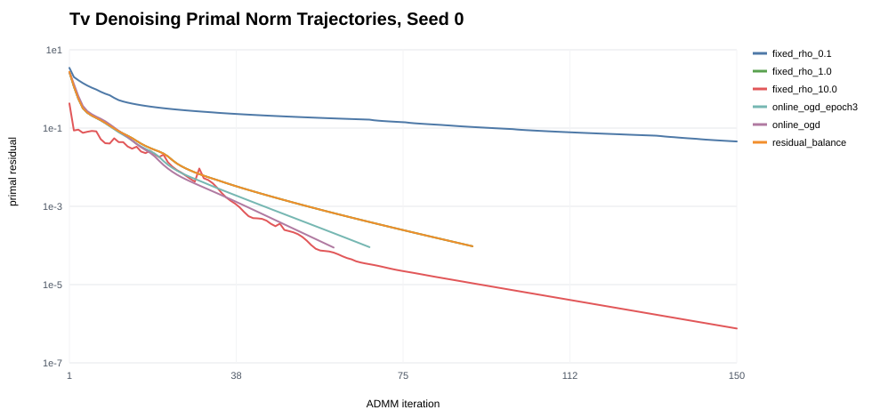
Tv Denoising Dual Norm Seed0
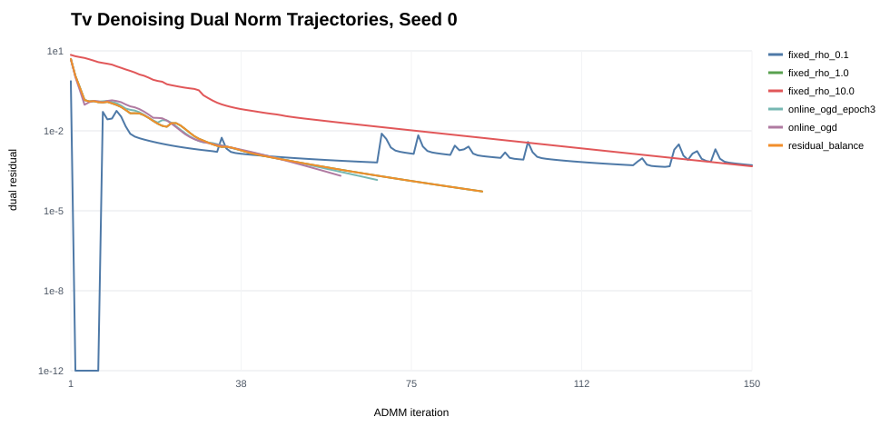
Tv Denoising Rho Seed0
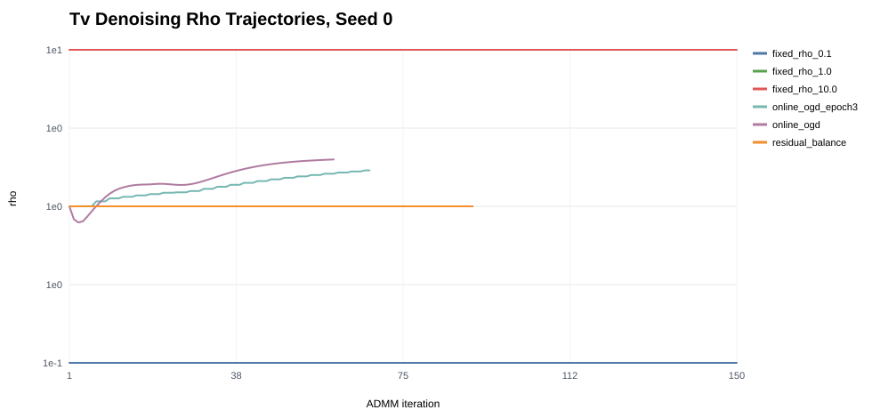
Grouped Metrics
| problem | method | iterations | final_primal | final_dual | final_rho | rho_changes |
|---|---|---|---|---|---|---|
| consensus_lasso | fixed_rho_0.1 | 150.00 | 0.00149 | 1.85e-06 | 0.10 | 0 |
| consensus_lasso | fixed_rho_1.0 | 27.00 | 8.18e-05 | 2.2e-05 | 1.00 | 0 |
| consensus_lasso | fixed_rho_10.0 | 150.00 | 2e-06 | 0.00033 | 10.00 | 0 |
| consensus_lasso | online_ogd | 24.67 | 7.08e-05 | 7.06e-05 | 1.50 | 24.67 |
| consensus_lasso | online_ogd_epoch3 | 26.00 | 7.72e-05 | 3.34e-05 | 1.23 | 8.33 |
| consensus_lasso | residual_balance | 27.00 | 8.18e-05 | 2.2e-05 | 1.00 | 0 |
| graphical_lasso | fixed_rho_0.1 | 150.00 | 0.00265 | 2.7e-06 | 0.10 | 0 |
| graphical_lasso | fixed_rho_1.0 | 36.67 | 7.55e-05 | 9.58e-05 | 1.00 | 0 |
| graphical_lasso | fixed_rho_10.0 | 150.00 | 7.79e-06 | 0.0061 | 10.00 | 0 |
| graphical_lasso | online_ogd | 34.67 | 8.44e-05 | 8.64e-05 | 1.72 | 34.33 |
| graphical_lasso | online_ogd_epoch3 | 40.00 | 8.69e-05 | 1.84e-05 | 1.00 | 13.00 |
| graphical_lasso | residual_balance | 36.67 | 7.55e-05 | 9.58e-05 | 1.00 | 0 |
| tv_denoising | fixed_rho_0.1 | 150.00 | 0.04 | 0.000152 | 0.10 | 0 |
| tv_denoising | fixed_rho_1.0 | 130.33 | 0.00021 | 2.7e-05 | 1.00 | 0 |
| tv_denoising | fixed_rho_10.0 | 150.00 | 5.94e-07 | 0.000236 | 10.00 | 0 |
| tv_denoising | online_ogd | 76.33 | 9.35e-05 | 7.64e-05 | 2.30 | 76.33 |
| tv_denoising | online_ogd_epoch3 | 90.67 | 9.34e-05 | 6.24e-05 | 2.14 | 29.67 |
| tv_denoising | residual_balance | 125.00 | 0.000126 | 2.95e-05 | 1.33 | 0.33 |